FMOD Studio User Manual 2.02
- Welcome to FMOD Studio
- FMOD Studio Concepts
- Organizing the Project
- Authoring Events
- Working with Instruments
- Managing Assets
- Parameters
- Getting Events into Your Game
- Mixing
- The Sandbox
- Editing During Live Update
- Profiling
- Dialogue and Localization
- Using Source Control
- Supporting Downloadable and User-generated Content
- Advanced Topics
- Quick Start Tutorial
- Event Macros Drawer Reference
- Plug-in Reference
- Modulator Reference
- Parameters Reference
- Scripting
- Scripting API Reference
- Keyboard Shortcut Reference
- Troubleshooting
- Glossary
- Appendix: Celeste Getting Started Guide
- Appendix: Reaper Integration
17. Quick Start Tutorial
This tutorial covers the entire workflow of making content in FMOD Studio, starting with creating a new project, and ending with built banks ready to be used in your game.
It takes a little under sixty minutes to complete.
There's a lot more to learn about FMOD Studio than this tutorial can cover. There are links throughout it to more detailed information, and if you get to the end and still want to learn more, the best place to start is the FMOD Studio concepts chapter.
-
Launch FMOD Studio.
The welcome dialog appears.
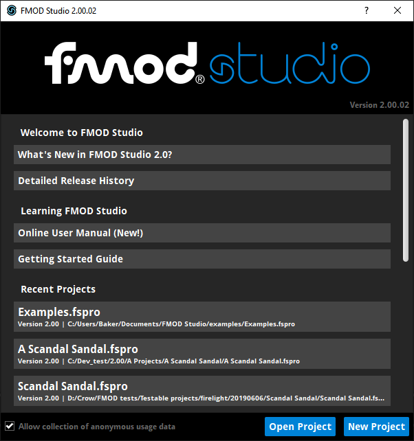
-
For the purposes of this tutorial, we need a new, blank project, so click the new project button.
The welcome dialog disappears, and the event editor window displays a new, blank project.
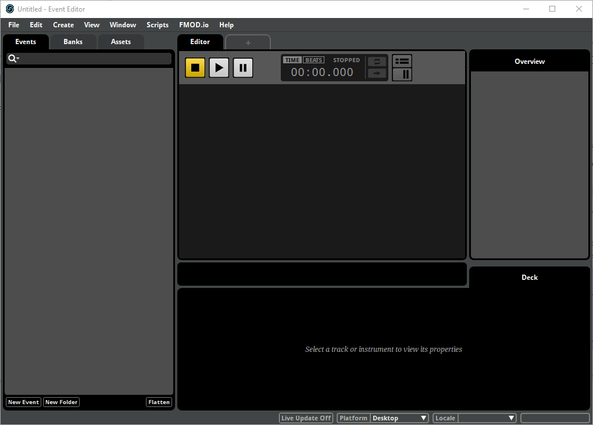
Normally, each game you make will require just one FMOD Studio project. You could start editing this project immediately, but it would be a good idea to save it somewhere first.
-
Open the File menu and select 'Save.'
An operating system-specific file picker dialog appears, prompting you to specify a name for the project and the location in which it is to be saved.
-
Pick a project name and location that you'll remember, then click the "Save" button.
Your new FMOD Studio project is saved, and can be loaded at any time in future.
Now it's time to start creating content. The basic unit of content in FMOD Studio is the event. Events can be created and organized in the events browser, located on the left side of the event editor window.

-
Right-click on the events browser, and select "New Event > New 3D Timeline" from the context menu. Then hit the 'Enter' key.
An event named "New Event" is created, and its timeline parameter sheet and properties are displayed in the editor, overview, and deck to the right of the events browser.
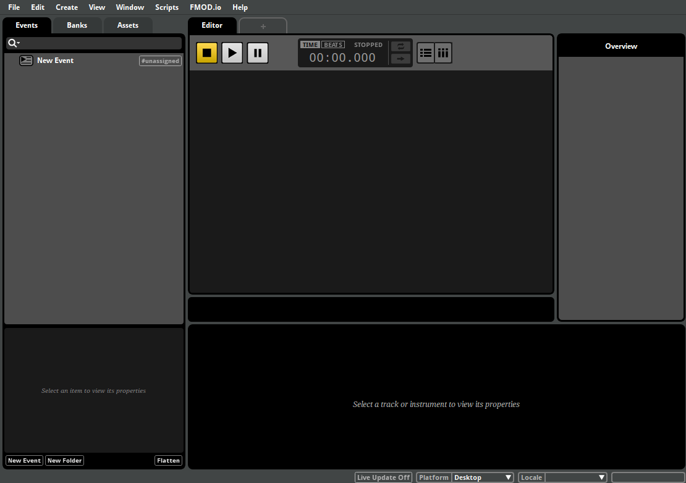
For more information about the event editor window, see the anatomy of the event editor section of the authoring events chapter.
Your new event is empty, and wouldn't produce any sound if we played it. To make it produce audible output, we first have to import some audio files.
-
Click on the assets tab located at the top of the events browser.
The assets browser appears.
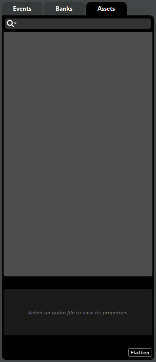
The assets browser displays all the audio files that have been imported into the project. No audio files have been imported yet, so the browser is empty.
-
Select "File > Import Assets..."
An operating system-specific file picker dialog appears, prompting you to navigate to and select one or more files.
-
Navigate to the folder containing the example assets (which you can download from the learning resources section of our download page). Select "one.ogg", "two.ogg", and "three.ogg", then press the open button.
The assets are copied into your project's assets folder, and appear in the assets browser.
For more information about audio assets, see the managing assets chapter.
-
In the editor, right-click on the "Audio 1" audio track, and select "Add Multi Instrument" from the context menu.
A blue box appears on the audio track. This is a multi instrument.
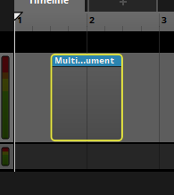
A multi instrument is a commonly used type of instrument that has a playlist of assets and instruments that it can play.
-
Click on the multi instrument to select it.
The multi instrument's properties and playlist appear in the deck.
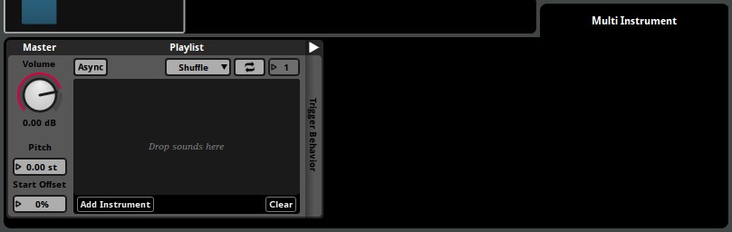
-
Click on the topmost asset in the assets browser, then hold down the shift key and click on the bottommost asset to multi-select all three assets.
-
Click and drag the multi-selection of audio assets from the assets browser onto the instrument's playlist.
The assets are added to the playlist, and their waveform graphics appear on the instrument in the editor.
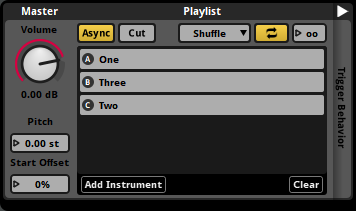
Multi instruments produce audible output based on their playlist contents when triggered. We can test this behaviour by auditioning the event.
-
Click on the play button in the transport bar.
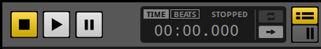
When the timeline playback position reaches the instrument, the instrument is triggered, and randomly selects one of the assets in its playlist to play.
-
Click on the stop button in the transport bar to stop the audition. If you want to hear the event again (and hear it play one of the other assets in its playlist), click play to audition the event again.
For more information about instruments, see the working with instruments chapter.
Currently, there is no way for a game to influence the event while it's playing. Let's change that.
Parameters allow a game to change to an ongoing event's behavior in a variety of ways. If you use the event editor to add parameter-based behavior to an event, your game's code can alter the behavior of that event by updating the values of its parameters.
In order to add parameter-based behavior to our event, we must first add a preset parameter to the project.
-
Select "Window > Preset Browser".
The preset browser window appears, displaying the parameters browser. This window allows you to create and organize preset parameters and preset effects.
For now, we'll be creating a new preset parameter for your project.
-
Right-click on an empty part of the parameters browser, then click on the "New Parameter" button that appears in the select parameter context menu.
The add parameter dialog appears.
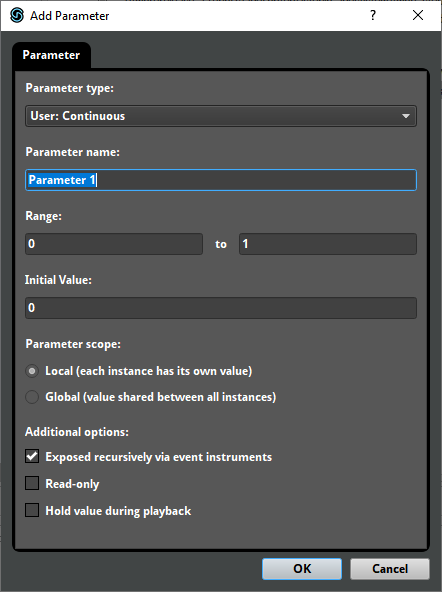
-
The default settings are fine, so click on the OK button.
The add parameter window disappears, and a parameter named "Parameter 1" appears in the parameters browser.
For more information about parameters and preset parameters, see the parameters and parameters reference chapters.
Now that the preset parameter has been created, we no longer need the presets browser to be open.
-
Click on the presets browser window's close button to close it.
For the purposes of this tutorial, we will be making the event's pitch depend on the value of a parameter.
-
Click on the master track's head in order to select the event master track.
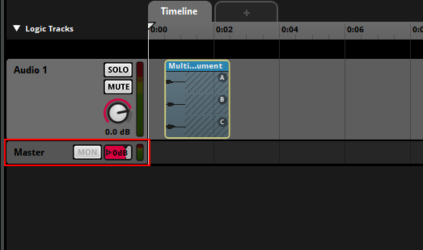
The track's signal chain appears in the deck. In addition, the event's macros drawer appears at the right end of the deck.
-
Right-click on the pitch number box, and select "Add Automation" from the context menu.
An automation and modulation drawer appears to the right of the macros drawer, with a section labeled "Automation: Pitch."
-
Click on the pitch automation section's add curve button, select "Browse" from the context menu, and then select the "Parameter 1" parameter from the select parameter pop-up.
A dashed red line appears in the pitch automation section. This is the automation curve, a line graph showing the value of the automated property at every possible value of the parameter. Currently the automation curve is perfectly horizontal, which means the property's value is the same at every possible parameter value.

-
Click on the red line.
The automation curve becomes a solid line, and an automation point appears at the point you clicked.
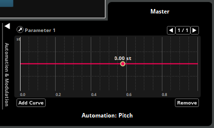
Automation points determine the value of the automated properties at specific points along the automated parameter, and so define the shape of their automation curves.
-
Click on a different part of the automation curve to add a second automation point.
-
Click and drag the new automation point up or down to change its value.
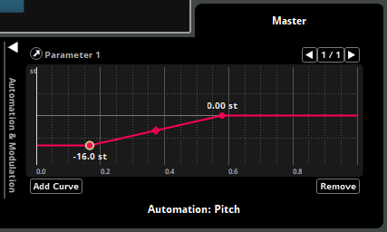
This automation curve ensures that the pitch of the event changes depending on the value of the parameter.
-
Click on the play button in the transport bar.
The event auditions at the pitch set by the automation for Parameter 1's default value of 0.
-
Once the event has finished playing, click and hold the mouse button on the Parameter 1 parameter's number box in the transport bar, and drag the mouse cursor up until the parameter reaches its maximum value of 1.
-
Click on the play button in the transport bar.
The event pitch affects the speed of the timeline playback position and the pitch of the event's output, so you'll notice that the event sounds different now that the value of the parameter has been changed.
For more information about automation, see the automation section of the authoring events chapter.
In order to hear this event in a game, it is necessary to assign it to a bank, and then build that bank. Building converts your project into a format which the FMOD Studio API can use.
-
Right-click on the "New Event" event, and select "Assign to Bank > Master" from the context menu.
Now that the event is assigned to that bank, it will be included in that bank whenever we build it.
-
Select "File > Build..."
FMOD Studio builds your project's bank files.
-
Open Finder or Explorer, and navigate to the location in which you saved this FMOD Studio project.
Inside the FMOD Studio project folder, you'll find a subfolder named "Build". This folder contains another subfolder, named "Desktop", which contains the files "Master.bank" and "Master.strings.bank". These files are the project's built banks, and your game will need them to play the event you created.
For information on how to play content from built bank files in your game, see the FMOD API User Manual.